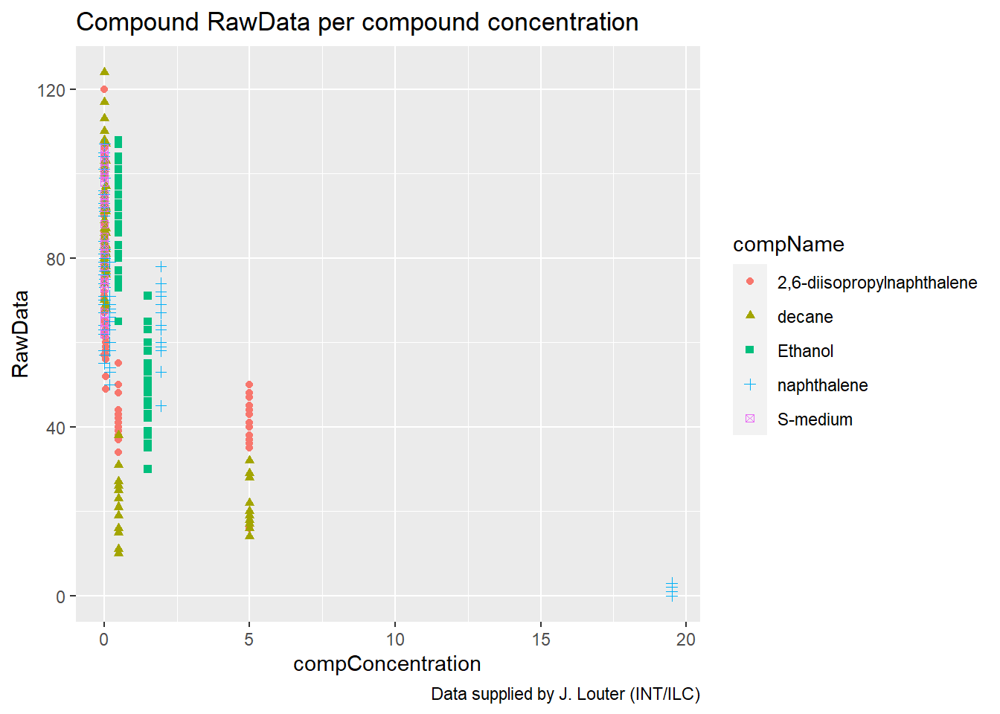
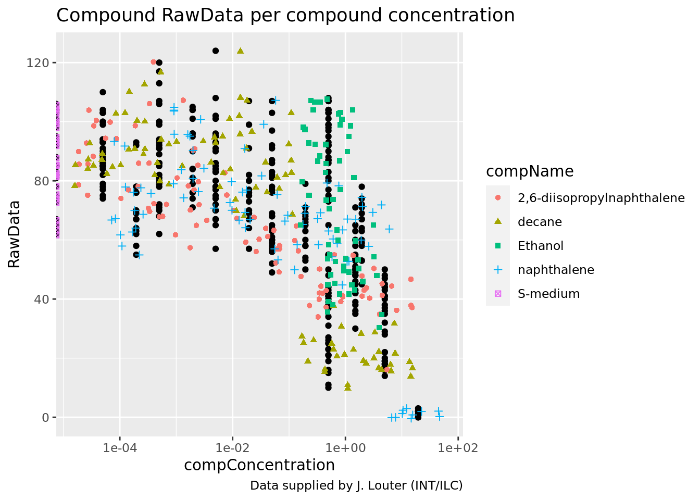
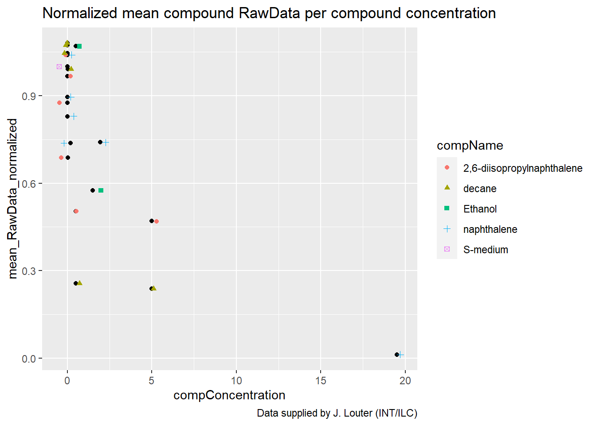

R portfolio Daniël Roodzant
23-4-2021
My bookdown
0.1
0.1.1 Assignment
C. elegans plate experiment
(Again: work out this exercise in a Rmarkdown file in your portfolio-project. You will need this later to put in your portfolio)
The data for this exercise was kindly supplied by J. Louter (INT/ILC) and was derived from an experiment in which adult C.elegans nematodes were exposed to varying concentrations of different compounds. The variables RawData (the outcome - number of offspring counted as an integer value, after incubation time), compName (the generic name of the compound/chemical), the compConcentration (the concentration of the compound), and the expType are the most important variables in this dataset.
A typical analysis with this data would be to run a dose-response analysis using a log-logistic model with estimates for the maximal, the minimal, the IC50 concentration and the slope at IC50. We will not go into the details but a good package to run such computations and create graphs in R is the {drc} package. See: and:. In the exercise below we will create some visualizations using {ggplot2}.
A. Review the following Excel file in the ./data/CE.LIQ.FLOW.062_Tidydata.xlsx (it’s here), by opening the file in Excel. See if you can spot anything peculiar about this file. Do not edit the file in any way. Just close it when you are done. (Annoyingly, Excel asks you to save your changes, even if you did not touch anything in the file: why is this cumbersome?)
B. Open the file in R, using the {readxl} package.
C. Inspect the data types of columns RawData, compName and compConcentration. What types would you expect from the experimental description above. Have the data types been correctly assigned during the importing of the data into R?
D. Create a graph displaying a scatterplot for the CE.LIQ.FLOW.062_Tidydata.xlsx data, for the different compounds and the varying concentrations. Put the compConcentration on the x-axis, the DataRaw counts on the y-axis and assign a colour to each level in compName. Assign a different symbol (shape =) to each level in the expType variable. Try fixing the labels of the x-axis so that we can read them.
E. When creating the plot under C), what happened with the ordering of the x-axis labels. Explain why this happens. Look at the data-type of the compConcentration column in the data again to find a clue.
F. Correct the data-type of compConcentration to numeric and than look at the graph again. Use a log10 transformation on the x-axis to get a clear graph. Also, add a bit of jitter to the points in the graph so that points are not overlapping.
G & H. Fill in: (G) The positive control for this experiments is ….. (H) The negative control for this experiment is …..
I. Think about how you would analyze this experiment to learn whether there is indeed an effect of different concentrations on offspring count and whether the different compounds have a different curve (IC50). Write down you analysis as a step-wise plan.
J. Normalize the data for the controlNegative in such a way that the mean value for controlNegative is exactly equal to 1 and that all other values are expressed as a fraction thereof. Rerun your graphs with the normalized data.
K. Why would you want to take the step under J?
0.1.2 A
Q: Review the following Excel file in the ./data/CE.LIQ.FLOW.062_Tidydata.xlsx (it’s here), by opening the file in Excel. See if you can spot anything peculiar about this file. Do not edit the file in any way. Just close it when you are done. (Annoyingly, Excel asks you to save your changes, even if you did not touch anything in the file: why is this cumbersome?)
A: Someone put a lot of care into the make-up of the sheet and it’s still difficult to read.
0.1.3 B
Open the file in R, using the {readxl} package.
| plateRow | plateColumn | vialNr | dropCode | expType | expReplicate | expName | expDate | expResearcher | expTime | expUnit | expVolumeCounted | RawData | compCASRN | compName | compConcentration | compUnit | compDelivery | compVehicle | elegansStrain | elegansInput | bacterialStrain | bacterialTreatment | bacterialOD600 | bacterialConcX | bacterialVolume | bacterialVolUnit | incubationVial | incubationVolume | incubationUnit | incubationMethod | incubationRPM | bubble | incubateTemperature |
|---|---|---|---|---|---|---|---|---|---|---|---|---|---|---|---|---|---|---|---|---|---|---|---|---|---|---|---|---|---|---|---|---|---|
| NA | NA | 1 | a | experiment | 3 | CE.LIQ.FLOW.062 | 2020-11-30 | Sergio Reijnders - Ellis Herder | 68 | hour | 50 | 44 | 24157-81-1 | 2,6-diisopropylnaphthalene | 4.99 | nM | Liquid | controlVehicleA | N2 | 25 | OP50 | heated | 0.743 | 8 | 300 | ul | 1,5 glass vial | 1000 | ul | rockroll | 35 | NA | 20 |
| NA | NA | 1 | b | experiment | 3 | CE.LIQ.FLOW.062 | 2020-11-30 | Sergio Reijnders - Ellis Herder | 68 | hour | 50 | 37 | 24157-81-1 | 2,6-diisopropylnaphthalene | 4.99 | nM | Liquid | controlVehicleA | N2 | 25 | OP50 | heated | 0.743 | 8 | 300 | ul | 1,5 glass vial | 1000 | ul | rockroll | 35 | NA | 20 |
| NA | NA | 1 | c | experiment | 3 | CE.LIQ.FLOW.062 | 2020-11-30 | Sergio Reijnders - Ellis Herder | 68 | hour | 50 | 45 | 24157-81-1 | 2,6-diisopropylnaphthalene | 4.99 | nM | Liquid | controlVehicleA | N2 | 25 | OP50 | heated | 0.743 | 8 | 300 | ul | 1,5 glass vial | 1000 | ul | rockroll | 35 | NA | 20 |
| NA | NA | 1 | d | experiment | 3 | CE.LIQ.FLOW.062 | 2020-11-30 | Sergio Reijnders - Ellis Herder | 68 | hour | 50 | 47 | 24157-81-1 | 2,6-diisopropylnaphthalene | 4.99 | nM | Liquid | controlVehicleA | N2 | 25 | OP50 | heated | 0.743 | 8 | 300 | ul | 1,5 glass vial | 1000 | ul | rockroll | 35 | NA | 20 |
| NA | NA | 1 | e | experiment | 3 | CE.LIQ.FLOW.062 | 2020-11-30 | Sergio Reijnders - Ellis Herder | 68 | hour | 50 | 41 | 24157-81-1 | 2,6-diisopropylnaphthalene | 4.99 | nM | Liquid | controlVehicleA | N2 | 25 | OP50 | heated | 0.743 | 8 | 300 | ul | 1,5 glass vial | 1000 | ul | rockroll | 35 | NA | 20 |
| NA | NA | 2 | a | experiment | 3 | CE.LIQ.FLOW.062 | 2020-11-30 | Sergio Reijnders - Ellis Herder | 68 | hour | 50 | 35 | 24157-81-1 | 2,6-diisopropylnaphthalene | 4.99 | nM | Liquid | controlVehicleA | N2 | 25 | OP50 | heated | 0.743 | 8 | 300 | ul | 1,5 glass vial | 1000 | ul | rockroll | 35 | NA | 20 |
| NA | NA | 2 | b | experiment | 3 | CE.LIQ.FLOW.062 | 2020-11-30 | Sergio Reijnders - Ellis Herder | 68 | hour | 50 | 41 | 24157-81-1 | 2,6-diisopropylnaphthalene | 4.99 | nM | Liquid | controlVehicleA | N2 | 25 | OP50 | heated | 0.743 | 8 | 300 | ul | 1,5 glass vial | 1000 | ul | rockroll | 35 | NA | 20 |
| NA | NA | 2 | c | experiment | 3 | CE.LIQ.FLOW.062 | 2020-11-30 | Sergio Reijnders - Ellis Herder | 68 | hour | 50 | 36 | 24157-81-1 | 2,6-diisopropylnaphthalene | 4.99 | nM | Liquid | controlVehicleA | N2 | 25 | OP50 | heated | 0.743 | 8 | 300 | ul | 1,5 glass vial | 1000 | ul | rockroll | 35 | NA | 20 |
| NA | NA | 2 | d | experiment | 3 | CE.LIQ.FLOW.062 | 2020-11-30 | Sergio Reijnders - Ellis Herder | 68 | hour | 50 | 40 | 24157-81-1 | 2,6-diisopropylnaphthalene | 4.99 | nM | Liquid | controlVehicleA | N2 | 25 | OP50 | heated | 0.743 | 8 | 300 | ul | 1,5 glass vial | 1000 | ul | rockroll | 35 | NA | 20 |
| NA | NA | 2 | e | experiment | 3 | CE.LIQ.FLOW.062 | 2020-11-30 | Sergio Reijnders - Ellis Herder | 68 | hour | 50 | 38 | 24157-81-1 | 2,6-diisopropylnaphthalene | 4.99 | nM | Liquid | controlVehicleA | N2 | 25 | OP50 | heated | 0.743 | 8 | 300 | ul | 1,5 glass vial | 1000 | ul | rockroll | 35 | NA | 20 |
0.1.4 C
Q: Inspect the data types of columns RawData, compName and compConcentration. What types would you expect from the experimental description above. Have the data types been correctly assigned during the importing of the data into R?
A: You would expect compConcentration to be dbl but it’s in chr so it was imported incorrectly.
0.1.5 D
Create a graph displaying a scatterplot for the CE.LIQ.FLOW.062_Tidydata.xlsx data, for the different compounds and the varying concentrations. Put the compConcentration on the x-axis, the DataRaw counts on the y-axis and assign a colour to each level in compName. Assign a different symbol (shape =) to each level in the expType variable. Try fixing the labels of the x-axis so that we can read them.
scatter_FLOW.062 <- read_tsv('data/data_raw/CE.LIQ.FLOW.062_Tidydata.txt', locale = locale(decimal_mark = ","))
scatter_FLOW.062 %>% ggplot(aes(x = compConcentration, y = RawData)) +
geom_point(aes(colour = compName, shape = compName)) +
labs(title = "Compound RawData per compound concentration",
caption = "Data supplied by J. Louter (INT/ILC)") 
0.1.6 E
Q: When creating the plot under C), what happened with the ordering of the x-axis labels. Explain why this happens. Look at the data-type of the compConcentration column in the data again to find a clue.
fout_scatter_FLOW.062 <- read_excel('data/data_raw/CE.LIQ.FLOW.062_Tidydata.xlsx')
fout_scatter_FLOW.062 %>% ggplot(aes(x = compConcentration, y = RawData)) +
geom_point(aes(colour = compName, shape = compName)) +
labs(title = "Compound RawData per compound concentration",
caption = "Data supplied by J. Louter (INT/ILC)") 
A: Every concentration is seen as a separate point because the column has the ‘chr’ type.
0.1.7 F
Correct the data-type of compConcentration to numeric and than look at the graph again. Use a log10 transformation on the x-axis to get a clear graph. Also, add a bit of jitter to the points in the graph so that points are not overlapping.
scatter_FLOW.062 <- read_tsv('data/data_raw/CE.LIQ.FLOW.062_Tidydata.txt', locale = locale(decimal_mark = ","))
scatter_FLOW.062 %>% ggplot(aes(x = compConcentration, y = RawData)) +
geom_point() +
geom_jitter(aes(colour = compName, shape = compName), width = 0.5) +
scale_x_log10() +
labs(title = "Compound RawData per compound concentration",
caption = "Data supplied by J. Louter (INT/ILC)") 
0.1.8 G & H
Fill in: (G) The positive control for this experiments is naphtalene (H) The negative control for this experiment is S-medium
0.1.9 I
Q: Think about how you would analyze this experiment to learn whether there is indeed an effect of different concentrations on offspring count and whether the different compounds have a different curve (IC50). Write down you analysis as a step-wise plan.
A: - Group the data for every compound. - Check if the data is normally distributed. - Use the apropriate statistical tests on the data to see if there is a statistically significant effect of different concentrations on the offspring count. - Calculate the IC50 and make a curve.
0.1.10 J
mean_data_FLOW.062 <- scatter_FLOW.062 %>%
select(RawData, compName, compConcentration) %>%
group_by(compName) %>%
filter(compName == 'S-medium') %>%
summarise(mean_RawData = mean(RawData, na.rm = TRUE))
normalized_FLOW.062 <- scatter_FLOW.062 %>%
select(compName, compConcentration, RawData) %>%
mutate(RawData_normalized = RawData / mean_data_FLOW.062$mean_RawData)
mean_normalized_FLOW.062 <- normalized_FLOW.062 %>% group_by(compName, compConcentration) %>%
summarise(mean_RawData_normalized = mean(RawData_normalized, na.rm = TRUE))
mean_normalized_FLOW.062 ## # A tibble: 21 x 3
## # Groups: compName [5]
## compName compConcentration mean_RawData_normalized
## <chr> <dbl> <dbl>
## 1 2,6-diisopropylnaphthalene 0.0000499 1.04
## 2 2,6-diisopropylnaphthalene 0.000499 0.967
## 3 2,6-diisopropylnaphthalene 0.00499 0.875
## 4 2,6-diisopropylnaphthalene 0.0499 0.687
## 5 2,6-diisopropylnaphthalene 0.499 0.504
## 6 2,6-diisopropylnaphthalene 4.99 0.470
## 7 decane 0.0000499 1.05
## 8 decane 0.000499 1.08
## 9 decane 0.00499 1.07
## 10 decane 0.0499 0.991
## # … with 11 more rowsmean_normalized_FLOW.062 %>% ggplot(aes(x = compConcentration, y = mean_RawData_normalized)) +
geom_point() +
geom_jitter(aes(colour = compName, shape = compName), width = 0.5) +
labs(title = "Normalized mean compound RawData per compound concentration",
caption = "Data supplied by J. Louter (INT/ILC)")  ### K To get the result in relation to the ‘0 value’ which makes it easier to compare the samples to the “normal” value.
0.2
0.2.1 Assignment
Open Peer Review
This exercise is about identifying reproducibility issues in a scientific publication. We use the criteria for reproduciblity that are publically available via here
Transparency Criteria, Definition, Response Type
Study Purpose, A concise statement in the introduction of the article, often in the last paragraph, that establishes the reason the research was conducted. Also called the study objective. Binary
Data Availability Statement, A statement, in an individual section offset from the main body of text, that explains how or if one can access a study’s data. The title of the section may vary, but it must explicitly mention data; it is therefore distinct from a supplementary materials section. Binary
Data Location, Where the article’s data can be accessed, either raw or processed. Found Value
Study Location, Author has stated in the methods section where the study took place or the data’s country/region of origin. Binary; Found Value
Author Review, The professionalism of the contact information that the author has provided in the manuscript. Found Value
Ethics Statement, A statement within the manuscript indicating any ethical concerns, including the presence of sensitive data. Binary
Funding Statement, A statement within the manuscript indicating whether or not the authors received funding for their research. Binary
Code Availability, Authors have shared access to the most updated code that they used in their study, including code used for analysis. Binary
Table clarification The Transparency Criteria are criteria you need to score the article of your choice for. Read them carefully and discuss with another course participant if you do not understand them. Each Tranparance criterion comes with a Definition that explains the criterion in more details. These descriptions are particularly helpful to understand what the criterium entails and what to look for in the article. The Response Type is the actual score
In this assisgment you need to find a scientific article yourself, using PubMed or another database or repository. Use only Open Access articles. Having an article in hand, go over the table above and score the article according the criteria. Be sure to select a primary article that presents a study using data from experimental work . This can be laboratory experiments or in silico experiments. Reviews and meta analysis are not suitable for this assignment
To guide your search you can choose between these topics
“Coronavirus / COVID-19” “The effects of compound on an organism / Toxicology” “The effectiveness of a drug or treatment in an animal study” “The effects of a compound investigated in a cell or organoid system” TIPS
If you do not know where to start your literature search start here: https://www.biorxiv.org/ This assignment is not about the topic you select, so try to do that quickly You may want to cheat and select an article that scores TRUE on the Data Availability Statement, because that enables you to use the this article again in one of the next assignments.
PART 1 To complete part 1, execute activity A to G
A. Initiate an empty RMarkdown file in your RStudio environment and provide author and title (after the title of this exercise)
B. Search for a primary Open Access article on one of the above listed topics, using Pubmed Central
C. Read the article diagonally to check if is indeed a primary article describing emperical scientific findings.
D. Include the reference to this article in your Rmd file
E. Score the article on the basis of the above ‘Repita’ criteria
F. Write an Rmarkdown report on your findings, including the table above and some information about the article such as general aim, short methods and results. If data is available, try including some
G. Store the source Rmd and knitted HTML in a folder called ‘Rmd’ in your course RStudio project. You will need it again later in the course
PART 2 To complete this assignment you will have to execute activity H to P
H. Using the OSF website, select a project that addresses an aspect of the SARS-Cov-2 virus.
I. Select a project that has a dataset and R-code shared in the project environment.
J. Have a look at the code. Describe in your own words what the code intents to achieve.
K. In terms of readibility of the code, how would you grade (1(very bad)-5(very good)) the code available.
L. Download the code and the data to a new RStudio project
M. Run the script or code that is available to reproduce at least 1 figure
N. When you encounter errors or flaws in the script, try fixing them and record your changes.
O. Taken together on a scale from 1 (very hard) to 5 (very easy), how much effort did it take you to reproduce the visualization from the project, report or article
P. Generate an RMarkdown script that contains the details on the project you selected, the code you used to create the visualization and your score for reproducibility.
0.2.2 A-G
Article: Yamayoshi S, Sakai-Tagawa Y, Koga M, et al. Comparison of Rapid Antigen Tests for COVID-19. Viruses. 2020;12(12):1420. Published 2020 Dec 10. doi:10.3390/v12121420
Study purpose - Present Data availability statement - Not present Data location - Present Study location - Present Author review - Not present Ethics statement - Present Funding statement - Present Code availability - Not present
In the study rapid antigen tests (RAT) for covid-19 are tested on corona positive patients to compare their effectivity to the PCR method. To do this patient material such as saliva and nose/throat swabs were used with four types of RATs and the standard PCR test. The RATs were also tested using 2 isolated virus strands. The RATs were less sensitive than the PCR test. Some of the RATs are not able to detect low quantities of virusparticles. There is no big difference between the isolated virus and the clinical samples. Data is available onine at: https://www.mdpi.com/1999-4915/12/12/1420/s1
0.2.3 H-P
project:
Bats and COVID-19 - https://osf.io/wxh6a/
The code intends to compare the searchwords ‘coronavirus’ and ‘bats’ through google and wikipedia in multiple countries.
Readability is a 4/5.
See bats_and_covid.R for the code and to run it.
Code:
######################
####Fig.1 (2016-2020 US Tv news about bats)
{
tv.dat <-
read.csv(file=“GDELTBatsUS1620.csv”)
tv.dat\(date <- ymd(tv.dat\)date)
tv.dat[61, “date”] <- “2021-01-01”
tv.dat[61, “value”] <- NA
tv.dat[61, “X”] <- 61
ggplot() +
geom_line(data=tv.dat, aes(x=X, y=value), size=0.8, color=“steelblue”, linetype=“solid”) +
theme_bw() +
scale_x_continuous(breaks=c(1, 13, 25, 37, 49, 61), labels=c(“2016”, “2017”, “2018”, “2019”, “2020”, “2021”)) +
theme(axis.text.x = element_text(colour=“black”,size=14,angle=0,hjust=.5,vjust=.5,face=“plain”),
axis.text.y = element_text(colour=“black”,size=14,angle=0,hjust=1,vjust=0,face=“plain”),
axis.title.x = element_text(colour=“black”,size=12,angle=0,hjust=.5,vjust=.5,face=“plain”),
axis.title.y = element_text(colour=“black”,size=12,angle=90,hjust=.5,vjust=.5,face=“plain”),
plot.title = element_text(size=22, face=“bold”)) +
theme(strip.background =element_rect(fill=“wheat”)) + labs(x="“, y=”“) +
theme(strip.text = element_text(colour =”black“, size=14, face=”bold"))
}
##################################
Errors: Adjusted data location and loaded library lubridate.
It took very low effort (4/5) to reproduce the code.
0.3
0.3.1 Assignment
Applying the Guerrilla analytics framework to your own project.
Look at your RStudio project that you created for the DAUR-II final assignment Rearrange your project according the Guerilla principles explained above Add README files to the datasets Use the {fs} package to share a screenshot of your folder tree in your portfolio, look at: for more info on how to use the {fs} package. Now clean up your work environment for this course (workflows) and the parallel course in DSFB2 (projecticum). Set up a folder structure that will accomodate future plans and collaboration on the projecticum. Provide readme-files or comments within the code where needed. For the projecticum folder, make sure you do this together with your lab partner.